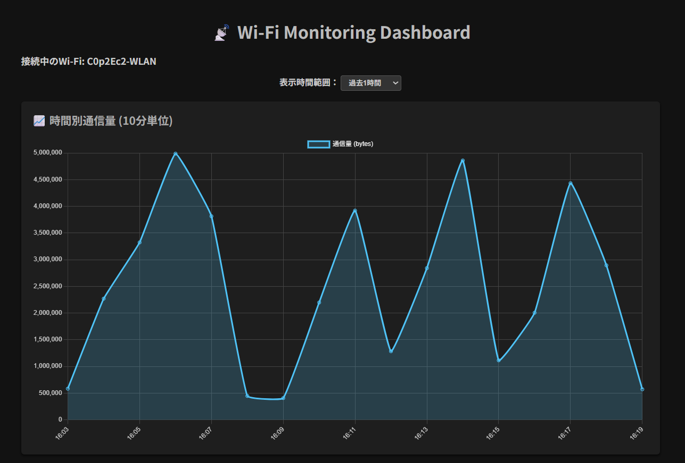
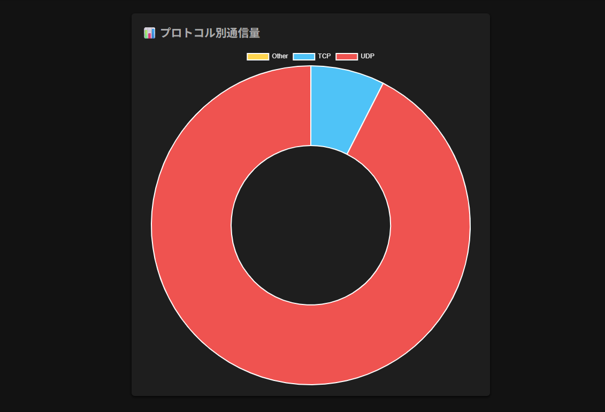
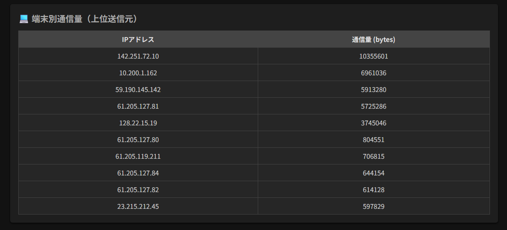
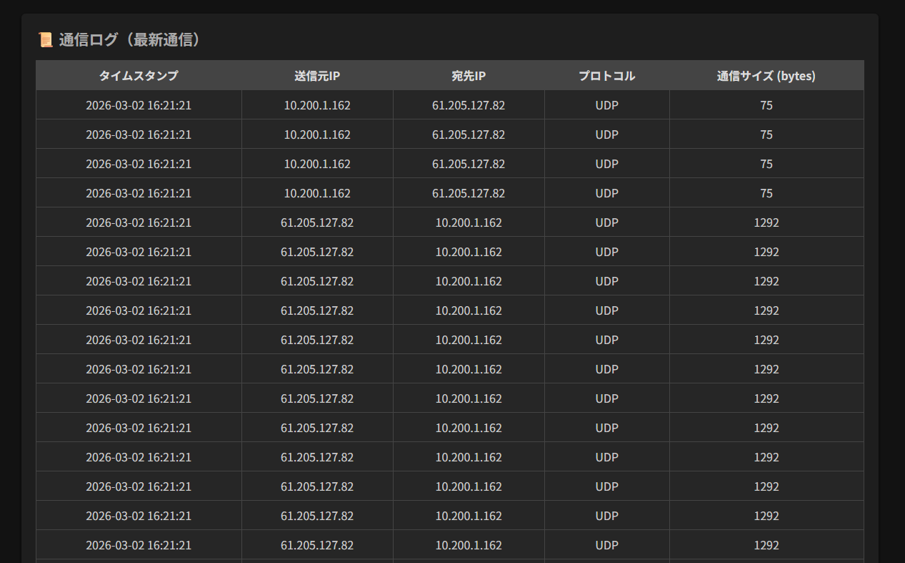

Specialist Student Engineer
付加価値を、
技術で形に。
単に動くものを作るだけでなく、ユーザーに寄り添った
プラスアルファの価値を追求するエンジニアを目指しています。
01About
松本凜多朗と申します。大阪府出身の4年制IT専門学生です。幼少期からPCに親しみ、専門学校入学を機に本格的にITの世界へ飛び込みました。
現在はAWSを用いたインフラ構築や、Pythonフレームワーク（Flask等）の活用を研究中。単なるコーディングに留まらず、インフラからバックエンドまで一気通貫した「付加価値」を形にできるエンジニアを目指しています。
02Timeline
2024.04
ECCコンピュータ専門学校 入学
Webの基礎（HTML/CSS, JS）からサーバーサイド（Java, PHP）、MySQLまで習得。
2025.04
実践開発と技術の幅を拡大
チーム開発を開始。Git/Docker/Figmaを導入し、Python, AWS, Linuxの学習を深める。
2026.04
個人開発・専門性の追求
Flaskを用いたリアルタイム監視ツールの実装を通じ、フルスタックな能力を磨く。
03Skills
90%~：実務レベル（深い理解と応用が可能）
70%~：応用レベル（独力でアプリ開発・実装が可能）
50%~：基礎レベル（構文を理解し、調べながら実装可能）
Frontend
HTML5 / CSS30%
JavaScript0%
Backend
Java0%
Python (Flask)0%
PHP0%
DB & Infrastructure
MySQL / SQLite0%
AWS / Docker0%
Linux (LPI)0%
04Works




Personal Development
Wi-Fi Monitoring Dashboard
Wi-Fiの通信量をリアルタイムで可視化。パケット解析や端末特定を提供します。
Sample Web App
フィルター確認用のダミーです。